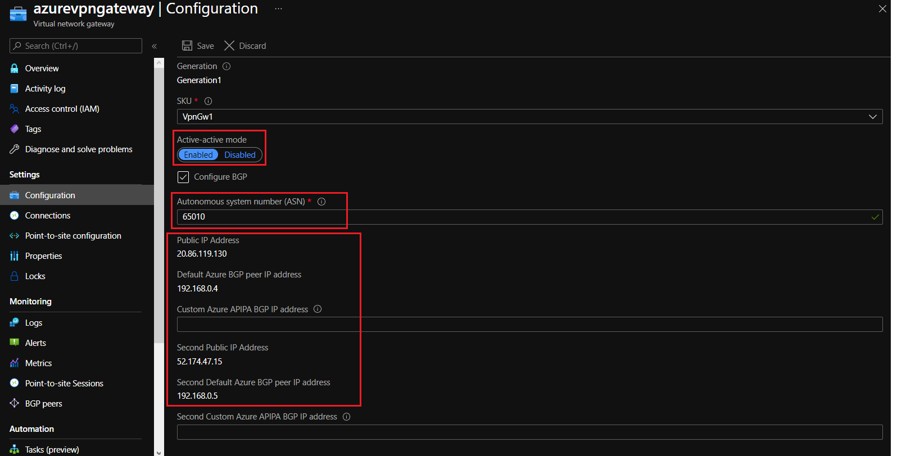
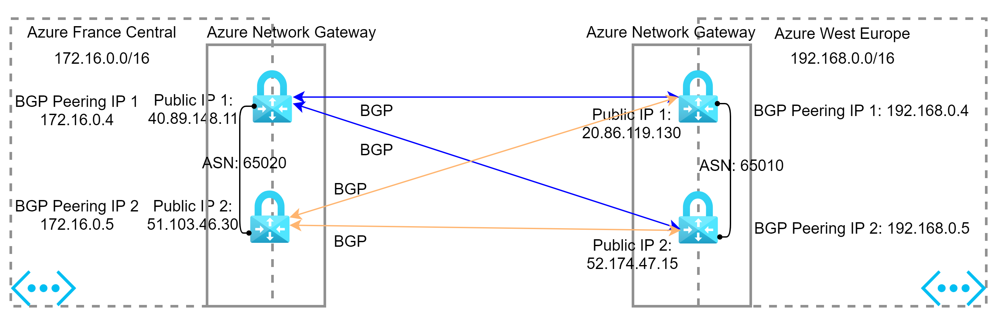

In the previous article (part 2), we talk about the Site-to-Site VPN with active/passive configuration.
Now, we configure our Site-to-Site VPN with active/active configuration using BGP (Border Gateway Protocol).
In the end, we will take a quick look at Azure ExpressRoute.
Site-to-Site VPN with High Availability
You can follow the steps below to enable the active/active configuration on your current VPN tunnel.
- Establish an active-active cross-premises connection with only one on-premises VPN device (local network gateway)
-
Use case: in this part, you enable the Azure VPN Gateway using active/active mode. Even though you have only one on-premises VPN device (one local network gateway) and one connection resource, both Azure VPN gateway instances will establish S2S VPN tunnels with the on-premises device.
-
Schema:
-
Terraform:
You could see that your Azure VPN Gateway is in active/active mode now and the BGP is enabled:

The connection from your on-premises to Azure is still connected using the new configuration:
- Establish an active-active cross-premises connection with two on-premises VPN device (dual redundancy)
-
Use case: if you have two VPN devices at the same on-premises network, you can achieve dual redundancy by connecting the Azure VPN gateway to the second VPN device.
-
Schema:
- Terraform:
You could see that your Azure VPN Gateway is updated from Azure portal:
The traffic can be flown between networks via the second connection azure_localgw_to_vpn_connection2 using BGP:
With this configuration in place, if you have any issue with one VPN connection, your traffic to Azure is still working thanks to the other connection.
Site-to-Site connection with HA Vnet-to-Vnet
- Use case: you could also enable the active/active configuration (S2S Vnet-to-Vnet connection) for your virtual networks in Azure
- Schema:

-
Terraform:
You could see that your VPN gateway is updated from Azure portal:
The communication should be worked between virtual networks using BGP.
From the virtual network located in France to the virtual network located in West Europe:
From the virtual network located in West Europe to the virtual network located in France:
Site-to-Site connection with Azure ExpressRoute
Azure ExpressRoute lets you seamlessly extend your on-premises networks into the Microsoft cloud. This connection is dedicated and private and is not travel over the Internet.
Establishing an ExpressRoute connection enables you to connect to Microsoft cloud services like Azure, Office 365, and Dynamics 365.
Security is enhanced, connections are more reliable, latency is minimal, and throughput is greatly increased
Here are some characteristics of this type of connection:
| ExpressRoute | |
|---|---|
| Azure supported services | All supported services |
| Typical bandwidth | 50 Mbps, 100 Mbps, 200 Mbps, 500 Mbps, 1 Gbps, 2 Gbps, 5 Gbps, 10 Gbps. more |
| Protocols supported | Direct connection over VLANs, NSP’s VPN technologies (MPLS, VPLS,…) |
| Routing | BGP |
| Connection resiliency | Active-active |
| Use case | Access to all Azure services, Enterprise/mission critical workloads, Big Data |
| Pricing | Pricing |
Implementing
To implement ExpressRoute, you need to work with an ExpressRoute partner here (Zayo, Equinix, Orange, Vondafone…). The partner provides the edge service which is responsible for extending your network to the Microsoft cloud.
The partner sets up connections to an endpoint in an ExpressRoute location here. These connections enable you to peer your on-premises networks with the virtual networks available through the endpoint. These connections are called circuits.
A circuit provides a physical connection for transmitting data through the ExpressRoute provider’s edge routers to the Microsoft edge routers. A circuit is established across a private wire rather than the public internet. Your on-premises network is connected to the ExpressRoute provider’s edge routers. The Microsoft edge routers provide the entry point to the Microsoft cloud.

For more information: here
Architecture schema
Steps to connect your on-premises networks to Azure using ExpressRoute
- Create an ExpressRoute circuit on Azure side
- Provide the circuit’s Service Key to your parner to set up the connection to an endpoint of ExpressRoute
- Once the connection is done and the provider status is displayed on the Azure portal as Provisioned, create a peering configuration for your circuit:
- a private peering to connect your on-premises networks to your virtual networks in Azure
- a Microsoft peering to connect your on-premises networks to Office 365 and its services
- Connect your virtual networks to an ExpressRoute circuit
- create an Azure virtual network gateway (type ExpressRoute). This gateway provide the entry point to network traffic that enters from your on-premises network.
- add a connection to connect your circuit to the virtual network gateway created
- Test your connection between networks
Terraform
Now, you can see that your ExpressRoute circuit is created but it is not provisioned yet. You may need to work with your service provider to provision this circuit.

The connection between this ExpressRoute circuit and your Azure Network Gateway is created but it’s failed at the moment.

You can recheck this connection once the ExpressRoute circuit is provisioned successfully.
References
- S2S active-active connection: https://docs.microsoft.com/en-us/azure/vpn-gateway/vpn-gateway-activeactive-rm-powershell
- Azure ExpressRoute: https://docs.microsoft.com/en-us/learn/modules/connect-on-premises-network-with-expressroute/3-how-expressroute-works
- Azure ExpressRoute provider: https://docs.microsoft.com/en-us/azure/expressroute/expressroute-locations
- Azure ExpressRoute location: https://docs.microsoft.com/en-us/azure/expressroute/expressroute-locations-providers